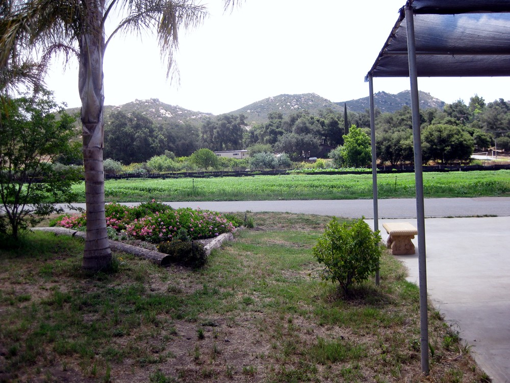
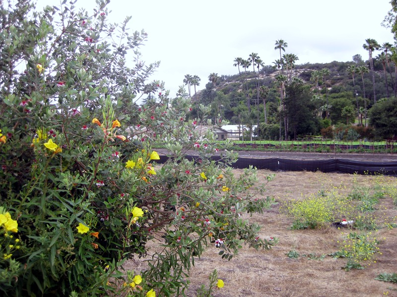
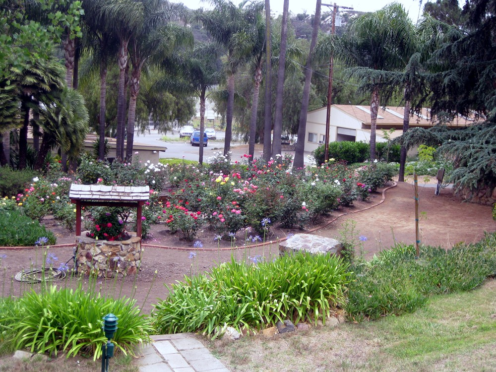
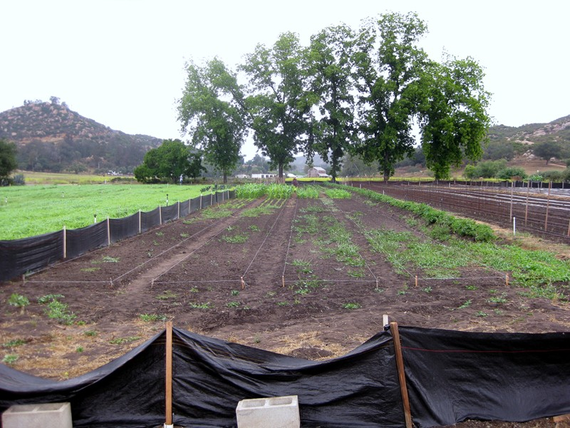
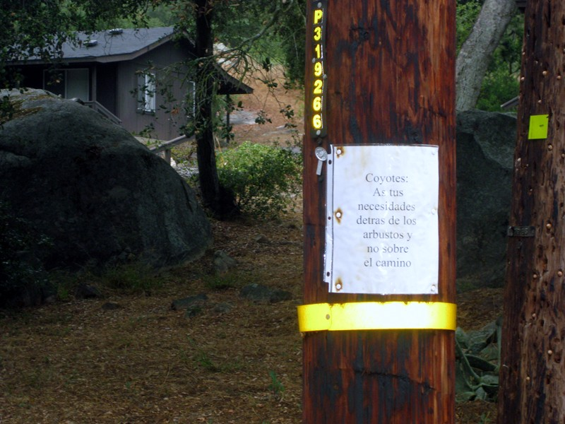

 |
| Hidden Valley is a men's ashram, retreat and farm in the hills above Escondido. I went for a conducted retreat "From Concentration to Pratyahara" (complete interiorization). Again, expected heat but it was cool and cloudy--it was actually raining in Temecula. |
 |
| There was also a talk on prosperity. Got me thinking about the hyperinflation I expect to happen because Congress is unable to stop spending and China won't buy debt forever. Realized that if US standard of living falls to third world levels--I know how to do third world (learned in India...and in grad school I guess). Am making gradual changes so I'll have everything in place. |
 |
| First change--after eating fresh vegetarian ashram food for a week, felt noticably better. Am starting to replace frozen dinners and turkey burgers with dal and cauliflower and broccoli (dal stores forever in the closet; can grow the vegetables in containers on the deck). |
 |
| Am also acclimating myself to less heating and AC. Reprogramming the thermostat is already saving me maybe $20-30 a month. As the brahmachari who gave the prosperity talk pointed out--it all depends on karma. Some people in his native Northern Italy cruised through WWII without really experiencing it. I do seem to have good financial karma. I always told myself I'd go to India when i was laid off--and it never happened. I ended up just going. |
 |
"Coyotes--Do your thing in the trees and not on the road." Getting back to San Diego was a test of calmess and patience. The cheap Dollar rental car's battery died. Everyone in the ashram was in a 3PM-9PM Sunday long meditation. Found one lay resident who wasn't. The jumper cables were locked in a truck and he didn't have the key. But after an hour we found one. It took a long time to get the car started, so I drove back nonstop. Had to exchange the car for fear it wouldn't start at 4PM the next morning in time to make the plane. Dollar gave me $20 for the inconvenience. |